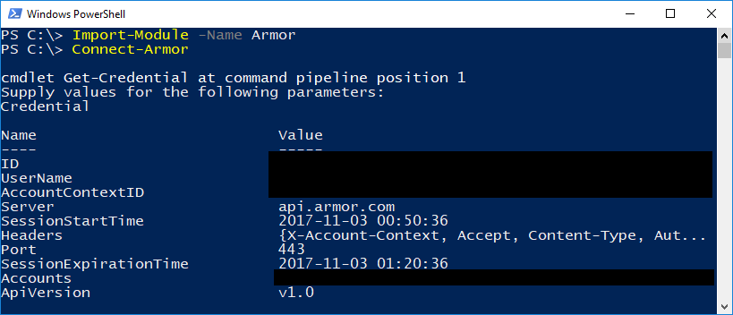

Now that you have the Armor module installed on your workstation, there's a few beginner commands that you can explore to feel comfortable with the available functions.
Connecting to Armor
To begin, let's connect to the Armor API. To keep things simple, we'll do the first command without any supplied parameters.
- Open a PowerShell terminal window
- Type
Connect-Armorand press enter.
A prompt will appear asking you for credentials. Enter your Armor Management Portal (AMP) username and password. Once entered, you will receive a multi-factor authentication request. Once accepted, you will see details about the newly created connection.

At this point, you are authenticated and ready to begin issuing commands to the Armor API.
Commands and Help
What if we didn't know that Connect-Armor exists? To see a list of all available commands, type in Get-Command -Module 'Armor'. This will display a list of every function available in the module. Note that all commands are in the format of Verb-ArmorNoun. This has two benefits:
- Adheres to the Microsoft requirements for PowerShell functions.
- Use of Armor in the command names should avoid collisions with other commands, but this cannot be guaranteed.
For details on a command, use the PowerShell help command Get-Help. For example, to get help on the Connect-Armor function, use the following command:
Get-Help -Name 'Connect-Armor'
This will display a description about the command.
For details and examples, use the -Detailed parameter.
Get-Help -Name 'Connect-Armor' -Detailed
For all available information, use the -Full parameter.
Get-Help -Name 'Connect-Armor' -Full
Gathering Data
Let's get some information about the Armor account. The use of any command beginning with the word Get is safe to use- no data will be modified. These are good commands to use if this is your first time using PowerShell.
We'll start by looking up the version running on the Armor cluster. Enter the command below and press enter:
Get-ArmorAccount
The result is fairly simple: the command will output the Armor accounts that this user account has access to. How about something a bit more complex? Try getting all of the virtual machines (VMs) in the Armor account. Here's the command:
Get-ArmorVM
Lots of stuff should be scrolling across the screen. You're seeing information on every Armor VM at a very detailed level. If you want to see just one Armor VM, tell the command to limit results. You can do this by using a parameter. Parameters are ways to control a function. Try it now.
Get-ArmorVM -Name 'TEST-VM'
The -Name portion is a parameter and 'TEST-VM' is a value for the parameter. This effectively asks the function to limit results to the specified VM: TEST-VM. Easy, right?
Note:
- Single or double quotes are required if your virtual machine has any spaces in the name.
- It's generally considered a good habit to always use quotes around names of objects in PowerShell.
For a full list of available parameters and examples, use Get-Help Get-ArmorVM -Full. Every Armor command has native help available.
Modifying Data
Not every command will be about gathering data. Sometimes you'll want to modify or delete data, too. The process is nearly the same, although some safeguards have been implemented to protect against errant modifications. Let's start with an easy one.
This works best if you have a test virtual machine that you don't care about. Make sure that virtual machine is visible to the Armor cluster. To validate this, use the following command:
Get-ArmorVM -ID 12345
Make sure to replace 12345 with the actual ID of the virtual machine. If you received data back from Armor, you can be sure that this virtual machine exists in the account.
Let's rename this virtual machine. This assumes that this is an Armor Complete VM, because only Armor Complete VMs can be renamed via the Armor API at present. To do this, use the following command:
Rename-ArmorCompleteVM -ID 12345 -NewName 'NewName'
Before the change is made, a prompt will appear asking you to confirm the change.
Confirm
Are you sure you want to perform this action?
Performing the operation "Renames the specified virtual machine in your account" on target "12345"".
[Y] Yes [A] Yes to All [N] No [L] No to All [S] Suspend [?] Help (default is "Y"):
This is a safeguard. You can either take the default action of 'Yes' by pressing enter, or type 'N' if you entered the wrong name or changed your mind. If you want to skip the confirmation check all together, use the -Confirm:$false parameter like this:
Rename-ArmorCompleteVM -ID 12345 -NewName 'NewName' -Confirm:$false
This will make the change without asking for confirmation. Please be careful!